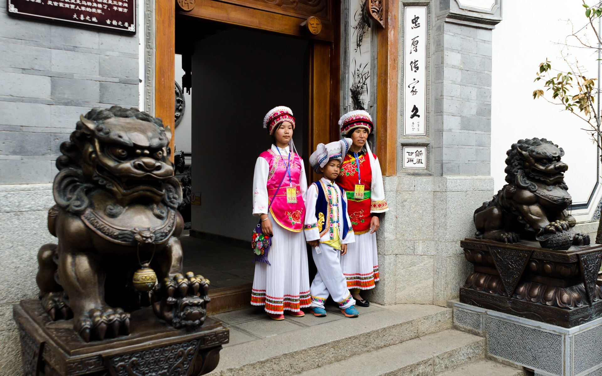

大理研学路线：从喜洲古镇开始，边走边完成白族文化任务。研学日期、答题进度和照片会保存在当前设备。
查看公开的完整大理研学日记 →
LEON'S TRAVEL JOURNAL / CHAPTER 02
云南大理研学手册主目录
沿着苍山与洱海，走进白族人家的生活。第一站来到喜洲古镇，认识老房子、茶马古道、扎染与喜洲粑粑。

大理 · 02沿着苍山与洱海，走进白族人家的生活。第一站来到喜洲古镇，认识老房子、茶马古道、扎染与喜洲粑粑。

大理 · 02大理研学路线：从喜洲古镇开始，边走边完成白族文化任务。研学日期、答题进度和照片会保存在当前设备。
查看公开的完整大理研学日记 →